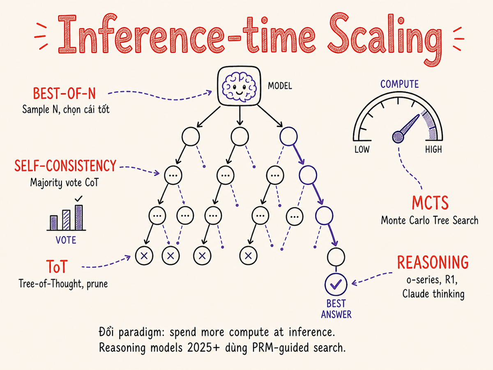

Inference-time Compute Scaling
Paradigm shift từ "train to be smarter" sang "think longer at runtime": Best-of-N, self-consistency, Tree-of-Thought, MCTS, và reasoning models thế hệ 2025–2026 — cách kiểm soát compute budget và khi nào nên bật chế độ suy nghĩ sâu.

38.1 Paradigm shift: Train-time scaling → Inference-time scaling
Từ khoảng 2017 đến 2023, giới nghiên cứu LLM tuân theo một niềm tin cốt lõi: muốn model thông minh hơn, hãy train nó nhiều hơn — nhiều tham số, nhiều dữ liệu, nhiều GPU-giờ. Scaling laws của Kaplan (2020) và Chinchilla (2022) là kim chỉ nam: tăng compute → tăng model size + data đúng tỷ lệ → loss giảm đều đặn.
Đến 2024–2025, một hướng đi bổ sung nổi lên và nhanh chóng trở thành mainstream: inference-time compute scaling. Thay vì đổ thêm tài nguyên vào quá trình train, ta cho model nghĩ lâu hơn lúc chạy — generate nhiều bước trung gian, khám phá nhiều nhánh giải pháp, và tự đánh giá lại kết quả trước khi đưa ra câu trả lời cuối.
Model lớn hơn = model thông minh hơn. Để cải thiện một task khó (toán IMO, code competition), cách tiếp cận là train thêm trên dữ liệu liên quan, scale model lên, hoặc fine-tune chuyên biệt. Mỗi cải tiến đòi hỏi một chu kỳ train mới — thường mất hàng tuần và hàng triệu đô.
→ Compute đổ vào lúc train; inference nhanh, nhất quán, but limited
Một model đã train sẵn có thể cải thiện đáng kể chất lượng trên bài toán khó bằng cách dùng thêm compute lúc inference: sinh ra nhiều lời giải, chọn lời giải tốt nhất, duyệt cây giải pháp, hay chạy vòng lặp tự sửa lỗi. OpenAI o1/o3, Claude extended thinking, DeepSeek-R1 là hiện thân của paradigm này.
→ Compute tiêu thụ lúc runtime; quality scale theo budget; latency tăng
Inference-time scaling không thay thế train-time scaling — chúng bổ sung nhau. Một model được train tốt (large, high-quality data) khi kết hợp với inference-time compute cho kết quả tốt nhất. Điểm mấu chốt là: bây giờ AI Engineer có một nút điều chỉnh mới — computing budget lúc runtime — và phải biết khi nào nên xoay nút đó.
38.2 Lý thuyết: tại sao nhiều compute hơn lại cải thiện chất lượng?
Câu trả lời cơ bản nằm ở bản chất của autoregressive generation. Mỗi token tiếp theo được chọn bằng cách sample từ distribution có điều kiện trên toàn bộ context đã có. Với các bài toán đơn giản, greedy decoding (chọn token xác suất cao nhất) thường đủ. Nhưng với bài toán phức tạp nhiều bước, một lựa chọn token sai ở giữa chuỗi reasoning có thể dẫn đến toàn bộ hướng đi sai.
Nghiên cứu của Snell et al. (2024) "Scaling LLM Test-Time Compute Optimally" chỉ ra rằng với các bài toán có độ khó vừa phải, phân bổ thêm compute lúc inference (thay vì dùng model lớn hơn) cho cost-efficiency cao hơn. Nói cách khác:
Đôi khi tốt hơn nếu dùng model nhỏ hơn suy nghĩ lâu hơn, thay vì model lớn hơn suy nghĩ nhanh.
Cơ chế chính là: nhiều compute → nhiều "nhánh suy nghĩ" được khám phá → xác suất tìm được đường đi đúng đến đáp án tăng lên. Đây là lý do tại sao các kỹ thuật như Best-of-N, self-consistency, hay MCTS đều hoạt động được.
38.3 Best-of-N Sampling
Kỹ thuật đơn giản nhất của inference-time scaling: sinh ra N câu trả lời độc lập (với temperature > 0 để có diversity), sau đó chọn câu trả lời tốt nhất dựa trên một hàm đánh giá (verifier).
Verifier là mấu chốt của Best-of-N. Có hai loại chính:
- Outcome Reward Model (ORM): chấm điểm toàn bộ câu trả lời cuối — đơn giản hơn, ít tốn compute hơn.
- Process Reward Model (PRM): chấm điểm từng bước trong chuỗi reasoning — phức tạp hơn, nhưng phát hiện được sai lầm sớm hơn và hướng dẫn search hiệu quả hơn.
Best-of-N là baseline hữu ích: dễ implement, song song hoá được hoàn toàn (N samples độc lập), nhưng tốn kém vì cost tăng tuyến tính theo N và không tận dụng được thông tin từ các samples để cải thiện lẫn nhau.
38.4 Self-Consistency: Majority Vote trên CoT
Wang et al. (2022) giới thiệu self-consistency: sinh ra nhiều chuỗi chain-of-thought (CoT) khác nhau, sau đó chọn câu trả lời cuối cùng bằng majority vote. Ý tưởng là: nếu nhiều "đường suy nghĩ" khác nhau đều dẫn đến cùng một đáp án, đáp án đó nhiều khả năng đúng hơn là một đường suy nghĩ duy nhất.
| Sample | Chuỗi reasoning | Đáp án cuối |
|---|---|---|
| 1 | Tính tổng theo cách A → trung gian X → … | 42 |
| 2 | Thử chia nhỏ bài toán → bước Y → … | 42 |
| 3 | Dùng công thức khác → bước Z → … | 37 |
| 4 | Kiểm tra trường hợp đặc biệt → … | 42 |
| 5 | Phân tích trực tiếp → … | 42 |
| Majority vote → | 42 ✓ (4/5) | |
Self-consistency đặc biệt mạnh với các bài toán có đáp án dạng rời rạc (toán học, code output, true/false, multiple choice) — nơi dễ aggregate bằng voting. Với câu hỏi mở hay creative writing, majority vote ít ý nghĩa hơn.
Self-consistency không cần verifier ngoài — chính các samples tự vote cho nhau. Best-of-N cần một verifier/reward model riêng. Trong thực tế, self-consistency là lựa chọn mặc định khi không có verifier; Best-of-N hiệu quả hơn khi có PRM tốt.
38.5 Tree-of-Thought (ToT)
Yao et al. (2023) mở rộng CoT từ chuỗi tuyến tính thành cây tìm kiếm: mỗi bước suy nghĩ có thể phân nhánh thành nhiều hướng tiếp theo, sau đó một hàm đánh giá (evaluator) quyết định nhánh nào đáng mở rộng tiếp, nhánh nào cắt bỏ.
Ba thành phần cốt lõi của ToT:
- Thought decomposition: chia bài toán thành các "thought steps" đủ nhỏ để đánh giá được.
- Thought generator: sinh ra k candidates cho bước tiếp theo từ trạng thái hiện tại.
- State evaluator: đánh giá mỗi partial solution (LLM tự đánh giá hoặc heuristic).
- Search algorithm: BFS hoặc DFS để duyệt cây, với pruning để tiết kiệm compute.
ToT vượt trội so với CoT đơn thuần trên các bài toán cần backtracking — tức là khi bạn cần thử một hướng, nhận ra sai, quay lại và thử hướng khác. Ví dụ điển hình: Game of 24, crossword puzzle generation, creative writing với ràng buộc cứng.
38.6 Graph-of-Thought, Forest-of-Thought và các biến thể
Sau ToT, cộng đồng nghiên cứu nhanh chóng mở rộng cấu trúc tìm kiếm:
- Graph-of-Thought (GoT): Cho phép các nhánh suy nghĩ hợp nhất lại với nhau — không chỉ là cây mà là DAG (directed acyclic graph). Hữu ích khi hai hướng giải khác nhau có thể combine để tạo ra giải pháp tốt hơn (e.g., sorting: merge pieces from different branches).
- Forest-of-Thought (FoT): Chạy nhiều cây ToT song song với budget khác nhau, sau đó aggregate kết quả — kết hợp tính parallel của Best-of-N với tính structured của ToT.
- Algorithm-of-Thought (AoT): Embed thuật toán tìm kiếm (DFS, A*) trực tiếp vào trong chuỗi CoT, để model tự điều hướng search thay vì cần external search controller.
- Recursive CoT (RCoT): Model tự decompose bài toán thành sub-problems, giải đệ quy, rồi combine — phù hợp cho hierarchical problems như math proof hay code generation.
Các phương pháp nâng cao như GoT, FoT thường cần nhiều API calls hơn và orchestration phức tạp hơn. Trong practice 2025–2026, reasoning models (o3, Claude extended thinking) internalize nhiều trong số này — bạn không cần tự code ToT/GoT nếu dùng reasoning model. Tự implement các kỹ thuật này vẫn có giá trị với open-source models hoặc khi cần kiểm soát chi tiết quá trình tìm kiếm.
38.7 Monte Carlo Tree Search (MCTS) cho LLM Reasoning
MCTS là thuật toán tìm kiếm cổ điển trong game AI (AlphaGo, chess engines) — nay được áp dụng cho LLM reasoning. Ý tưởng cốt lõi: thay vì duyệt exhaustive hay dùng heuristic đơn giản, MCTS cân bằng exploration và exploitation bằng công thức UCT (Upper Confidence Bound for Trees) để quyết định nút nào cần mở rộng tiếp theo.
Vòng lặp MCTS cho LLM
- Selection: Từ root (bài toán gốc), đi xuống cây theo UCT score đến nút lá.
- Expansion: Từ nút lá, LLM sinh ra k reasoning steps tiếp theo.
- Simulation (Rollout): Từ nút mới, LLM "hoàn thành" bài toán đến cuối bằng một policy (có thể là greedy decode).
- Backpropagation: Reward của rollout được truyền ngược lên các nút tổ tiên, cập nhật Q-value và visit count.
rStar-Math và AlphaProof
Hai ứng dụng nổi bật của MCTS cho LLM reasoning:
- rStar-Math (Microsoft Research, 2024): Dùng MCTS với PRM để giải toán MATH benchmark. Model nhỏ (7B) kết hợp với MCTS và PRM có thể cạnh tranh với model lớn hơn nhiều dùng greedy decoding.
- AlphaProof (Google DeepMind, 2024): Giải bài toán Olympic toán học (IMO) bằng cách kết hợp LLM với symbolic solver (Lean) và MCTS-style search. Đạt silver medal level performance lần đầu tiên cho AI trên IMO 2024.
38.8 Reasoning Models 2025–2026: Internals và Landscape
Từ giữa 2024, các lab lớn lần lượt phát hành reasoning models — model được train đặc biệt để nội tại hoá quá trình suy nghĩ dài trước khi trả lời. Điểm khác biệt so với dùng CoT prompt thông thường: reasoning là một phần của quá trình train bằng RL, không chỉ là kỹ thuật prompting runtime.
Kiến trúc và training internals
Mặc dù các lab không công khai toàn bộ chi tiết, pattern chung được suy ra từ papers và technical reports:
- RL on reasoning chains: Model được train bằng reinforcement learning (thường dựa trên GRPO, PPO hoặc variants) với reward signal từ độ đúng của đáp án cuối. Model học "kiếm điểm" bằng cách sinh ra thinking tokens hữu ích.
- PRM-guided training: Process Reward Model được dùng để cung cấp dense reward signal — thay vì chỉ biết đáp án cuối đúng hay sai, model nhận phản hồi về từng bước suy nghĩ.
- Emergent reasoning behaviors: DeepSeek-R1 paper báo cáo các hành vi "aha moment" nổi lên tự nhiên: model tự nhận ra sai lầm và backtrack, tự verify lời giải, suy nghĩ theo nhiều góc độ — chỉ nhờ RL training, không cần supervised examples về cách thinking.
Bảng so sánh reasoning models
| Model | Provider | Thinking knob | Max thinking | Visibility | Đặc điểm nổi bật |
|---|---|---|---|---|---|
| o3 / o4-mini | OpenAI | reasoning_effort(low/medium/high) |
~100k tokens thinking | Ẩn (summary only) | Mạnh nhất về coding & math; o4-mini cost hiệu quả hơn |
| Claude 3.7+ Extended Thinking | Anthropic | thinking.budget_tokens(số tokens) |
~64k tokens thinking | Có thể inspect thinking blocks | Thinking có thể đọc được; interleaved thinking + tool use |
| DeepSeek-R1 | DeepSeek / self-host | Temperature + max_tokens | Không giới hạn cứng | Toàn bộ <think> block hiển thị | Open weights; cost rất thấp; training pipeline công khai |
| QwQ-32B / QwQ-Plus | Alibaba (Qwen) | Temperature + sampling | Không giới hạn cứng | <think> block hiển thị | Open source; cạnh tranh với proprietary; mạnh về toán |
| Gemini 2.x Thinking | thinking_config.thinking_budget(số tokens) |
~32k tokens thinking | Thinking summaries | Tích hợp tốt với Google tools; multimodal reasoning |
38.9 Long CoT vs Structured Search — Khi nào cái nào thắng?
Hai hướng tiếp cận chính của inference-time scaling có trade-off khác nhau:
| Tiêu chí | Long CoT (reasoning models) | Structured Search (ToT/MCTS + external) |
|---|---|---|
| Cách hoạt động | Model tự sinh chuỗi suy nghĩ nội tại dài trước khi trả lời | External controller điều phối nhiều LLM calls theo cấu trúc cây/đồ thị |
| Phù hợp với | Bài toán liên tục cần reasoning dài; khi latency tổng thể quan trọng hơn throughput | Bài toán cần explicit backtracking; khi có verifier/oracle tốt; khi parallelism quan trọng |
| Overhead | Latency cao hơn (sequential thinking); một API call | Nhiều API calls song song; phức tạp hơn để implement và debug |
| Interpretability | Claude: thinking blocks có thể đọc; OpenAI: thinking ẩn | Mỗi bước là một API call riêng, dễ log và trace hơn |
| Cost model | Trả cho thinking tokens (thường rẻ hơn output tokens); một lần | N × cost per call; cần cân nhắc cẩn thận với N lớn |
| Điểm yếu | Không thể "thực sự" backtrack; có thể hallucinate trong thinking | Context passing phức tạp; cần verifier chất lượng cao để có lợi ích |
Bắt đầu với reasoning model (o3/Claude extended thinking) — nó internalize cả Long CoT lẫn một dạng search nội tại. Chỉ tự implement ToT/MCTS khi: (1) bạn cần verifier mạnh chạy parallel, (2) bạn dùng open-source model không có built-in reasoning, hoặc (3) task của bạn cần explicit symbolic verification (như theorem proving, constraint satisfaction).
38.10 Cost vs Quality Curves — Compute Budget Knob
Một trong những tính chất thú vị nhất của inference-time scaling là tính liên tục: bạn có thể chọn điểm trên đường cong cost–quality phù hợp với yêu cầu từng use case.
Điểm quan trọng cần nhớ về cost–quality curve:
- Task difficulty quyết định hình dạng curve: Bài toán toán học khó có curve dốc đều; bài toán đơn giản plateau rất nhanh sau một lượng thinking nhỏ.
- Thinking tokens rẻ hơn output tokens: Với Anthropic, thinking tokens được tính là output tokens nhưng không tốn kém bằng final output tokens khi dùng extended thinking. OpenAI tính reasoning tokens riêng, thường ít hơn output tokens.
- Có inflection point: Mỗi task có một mức compute optimal — dưới đó quality chưa đủ tốt, trên đó chi phí không xứng đáng với cải tiến thêm.
38.11 Provider APIs: Thinking Budget Knobs
Ba provider chính đều expose thinking budget qua API, nhưng với interface khác nhau. Dưới đây là cách sử dụng chi tiết kèm code example:
OpenAI — reasoning_effort
import OpenAI from 'openai';
const client = new OpenAI();
// reasoning_effort: 'low' | 'medium' | 'high'
// 'low' → ~1k reasoning tokens, nhanh, rẻ, dùng cho simple tasks
// 'medium' → ~8k reasoning tokens, balanced (default)
// 'high' → ~25k+ reasoning tokens, chậm, đắt, dùng cho hard problems
const response = await client.chat.completions.create({
model: 'o3',
reasoning_effort: 'high', // ← nút điều chỉnh
messages: [
{ role: 'user', content: 'Prove that √2 is irrational.' }
],
});
// Xem usage: bao nhiêu reasoning tokens đã dùng
console.log(response.usage.completion_tokens_details.reasoning_tokens);
Anthropic — thinking.budget_tokens
import Anthropic from '@anthropic-ai/sdk';
const client = new Anthropic();
// budget_tokens: số thinking tokens tối đa (min 1024, recommended ≥ 10000 cho hard tasks)
// Thinking blocks xuất hiện trong response.content trước TextBlock
const response = await client.messages.create({
model: 'claude-opus-4-5',
max_tokens: 16000,
thinking: {
type: 'enabled',
budget_tokens: 10000, // ← nút điều chỉnh
},
messages: [
{ role: 'user', content: 'Solve this competitive programming problem...' }
],
});
// Thinking blocks có thể inspect
for (const block of response.content) {
if (block.type === 'thinking') {
console.log('Thinking:', block.thinking); // readable CoT
} else if (block.type === 'text') {
console.log('Answer:', block.text);
}
}
Google Gemini — thinkingConfig.thinkingBudget
import { GoogleGenerativeAI } from '@google/generative-ai';
const genAI = new GoogleGenerativeAI(process.env.GEMINI_API_KEY);
// thinkingBudget: 0 = thinking tắt; -1 = dynamic (model tự quyết)
// Giá trị cụ thể (e.g. 8192) = budget tokens tối đa
const model = genAI.getGenerativeModel({
model: 'gemini-2.0-flash-thinking-exp',
generationConfig: {
thinkingConfig: {
thinkingBudget: 8192, // ← nút điều chỉnh
},
},
});
const result = await model.generateContent('Plan a multi-agent research workflow...');
console.log(result.response.text());
Với Claude extended thinking, nếu bạn muốn instruct model về cách thinking (e.g., "think step by step"),
hãy đặt hướng dẫn đó trong user message, không phải system.
Thinking tokens không thể cache được với standard prompt caching — lưu ý khi thiết kế pipeline
để tránh tốn kém không cần thiết.
38.12 Khi nào Inference Scaling giúp được — và khi nào không
Giúp được đáng kể
- Toán học và logic hình thức: Competition math (AMC, AIME, IMO), theorem proving, logic puzzles. Kết quả cải thiện mạnh nhất vì có oracle verification (đáp án đúng/sai rõ ràng).
- Competitive programming: LeetCode Hard, Codeforces Div.1. Reasoning model có thể xem xét multiple approaches, catch off-by-one errors, handle edge cases tốt hơn.
- Multi-step planning: Lập kế hoạch phức tạp với nhiều dependencies, ràng buộc, và tradeoffs cần cân nhắc kỹ.
- Code review và debugging phức tạp: Tracing bug qua nhiều files, hiểu side effects, đề xuất fix toàn diện thay vì patch surface.
- Scientific reasoning: Phân tích paper, thiết kế thí nghiệm, clinical reasoning.
Không giúp được nhiều (hoặc không đáng)
- Simple conversational chat: Trả lời câu hỏi thông thường, chitchat, FAQ. Standard model đủ tốt với latency thấp hơn nhiều và cost thấp hơn.
- Retrieval-based Q&A: Khi câu trả lời chủ yếu từ retrieved documents, chất lượng phụ thuộc vào retrieval, không phải reasoning. Reasoning model không cải thiện được nếu context không đủ.
- Formatting và data extraction: Parse JSON, reformat, extract fields — task deterministic, reasoning không thêm giá trị.
- Creative writing thuần túy: Không có "đúng/sai" để suy luận đến — thinking tokens bị "lãng phí" vào meta-commentary về task thay vì cải thiện output.
- High-throughput, low-latency applications: Chatbot real-time với <1s latency requirement, classification pipeline với hàng nghìn requests/giây. Latency của reasoning model (5–60s) không phù hợp.
38.13 Engineering Implications: Latency, Cost, Observability
Inference-time scaling đặt ra những thách thức engineering mới mà không tồn tại với standard models:
Latency management
- Time-to-First-Token (TTFT) tăng đáng kể — model phải finish thinking trước khi generate output token đầu tiên (với most implementations). Thiết kế UX phải tính đến "loading" state dài hơn.
- Streaming thinking: Anthropic cho phép stream thinking blocks — có thể hiển thị thinking progress realtime cho user experience tốt hơn. Ví dụ: "Đang suy nghĩ... (3.2s)"
- Timeout thích hợp: Với high-effort queries, response có thể mất 30–60s. Tăng HTTP timeout, dùng async patterns, và cân nhắc background job cho long-running queries.
- Parallel queries: Nếu latency của thinking quá cao cho user-facing flow, có thể kick off query sớm (optimistic pre-fetch) hoặc dùng Best-of-N với parallel calls thay vì một call với high budget.
Cost monitoring
-
Thinking tokens cần track riêng: Chúng không xuất hiện trong output tokens
thông thường. Dùng
usage.completion_tokens_details.reasoning_tokens(OpenAI) hoặcusage.cache_read_input_tokens/ thinking block metrics (Anthropic). - Budget guard: Implement hard cap trên thinking budget cho production — nếu user gửi deliberately expensive query, không để nó tiêu hết budget tháng.
- Tiered reasoning: Dùng classifier đơn giản để route: câu hỏi đơn giản → standard model; câu hỏi phức tạp → low reasoning effort; câu hỏi rất khó → high effort. Giảm cost tổng thể xuống đáng kể.
Observability cho thinking tokens
- Log thinking tokens separately: Với Anthropic (thinking blocks visible), log thinking text vào observability system — cho phép debug "tại sao model suy nghĩ theo hướng này?"
- Track thinking efficiency: Số thinking tokens per task type, correlation với output quality — để calibrate budget setting.
- Eval với thinking budget levels: Trong eval pipeline, test cả low/medium/high effort để tìm điểm sweet spot cho từng task category.
Thinking tokens không được cache với standard prompt caching. Điều này có ý nghĩa quan trọng với architecture: nếu bạn dùng extended thinking trong agentic pipeline với nhiều turns, mỗi turn sẽ chạy thinking từ đầu. Thiết kế context window management cẩn thận hơn so với standard models.
38.14 Cách cũ vs Cách hiện tại
Tổng kết sự thay đổi workflow từ era single-shot CoT prompting sang era reasoning models và inference-time compute control:
Workflow
Viết prompt với hướng dẫn "hãy suy nghĩ từng bước" (chain-of-thought prompting), gọi model một lần, nhận về output. Nếu output sai, viết lại prompt và thử lại thủ công.
// Cách cũ — 2022–2023
const response = await openai.chat.completions.create({
model: 'gpt-4',
messages: [{
role: 'user',
content: `Let's think step by step.\n\n${problem}`
}],
temperature: 0, // greedy, deterministic
});
// Nhận về một câu trả lời. Đúng hay sai — không biết.
Hạn chế:
- Model có thể "viết CoT nhưng không thực sự suy nghĩ" — các bước CoT là cosmetic
- Không có backtracking — nếu bước 2 sai, các bước sau đều sai theo
- Không có cơ chế verify kết quả — output nhận được là final
- Không có compute budget control — tất cả queries được xử lý như nhau
Workflow
Dùng reasoning model với explicit thinking budget. Model tự điều hướng internal search loop (backtrack, verify, refine). Optionally, một external verifier/PRM đánh giá kết quả. Budget được điều chỉnh theo task complexity.
// Cách hiện tại — 2025–2026
// 1. Route bởi task complexity
const effort = taskComplexity === 'hard' ? 'high' : 'low';
// 2. Gọi reasoning model với budget
const response = await anthropic.messages.create({
model: 'claude-opus-4-5',
max_tokens: 16000,
thinking: {
type: 'enabled',
budget_tokens: effort === 'high' ? 20000 : 2000,
},
messages: [{ role: 'user', content: problem }],
});
// 3. Extract answer
const answer = response.content
.filter(b => b.type === 'text')
.map(b => b.text)
.join('');
// 4. Optionally: verify với external verifier hoặc Best-of-N
const verified = await verifyAnswer(problem, answer);
if (!verified) {
// retry với higher budget hoặc different approach
}
Cải tiến:
- Reasoning là genuine — được train bằng RL, không phải cosmetic text
- Model tự backtrack và verify nội tại khi reasoning
- Compute budget là explicit, controllable, và observable
- Có thể kết hợp với external verifier cho higher confidence
So sánh trực quan: tư duy cũ vs mới
| Khía cạnh | Cách cũ (2022–2023) | Cách hiện tại (2025–2026) |
|---|---|---|
| CoT là gì? | Kỹ thuật prompting — text hướng dẫn model "viết các bước" | Internal computation — model thực sự iterate trước khi output |
| Compute control | Không có — mọi query đều tốn lượng compute tương đương | Explicit budget knob (reasoning_effort, budget_tokens) |
| Backtracking | Không — sequential, một chiều | Yes — reasoning model có thể thay đổi hướng suy nghĩ nội tại |
| Verification | Tự verify qua prompt ("hãy kiểm tra lại") — unreliable | Model tự verify trong thinking; optionally + external verifier/PRM |
| Observability | Chỉ thấy output text | Thinking blocks visible (Anthropic, DeepSeek-R1, QwQ); token count metrics |
| Cost model | Tỉ lệ với output length | Tỉ lệ với thinking + output; thinking thường rẻ hơn output tokens |
| Latency | 1–5s điển hình | 5–60s với high thinking budget; cần design UX phù hợp |
Tóm tắt
- Paradigm shift 2024–2025: Inference-time compute scaling bổ sung cho train-time scaling — cho phép cải thiện chất lượng tại runtime bằng cách đầu tư thêm compute lúc generate.
- Best-of-N và self-consistency là những kỹ thuật nền tảng: đơn giản, dễ implement, hiệu quả khi có verifier tốt (Best-of-N) hoặc không cần verifier (self-consistency).
- Tree-of-Thought và MCTS cho phép backtracking và structured search — vượt trội so với CoT tuyến tính khi bài toán cần khám phá nhiều hướng và phát hiện sai lầm sớm.
- Reasoning models 2025–2026 (o3/o4-mini, Claude extended thinking, DeepSeek-R1, QwQ, Gemini Thinking) internalize reasoning qua RL training, không chỉ là prompting tricks. Mỗi provider expose thinking budget qua API khác nhau.
- Long CoT vs structured search: Dùng reasoning model trước (đơn giản hơn, ít API calls); tự implement ToT/MCTS khi cần verifier mạnh, parallelism, hoặc dùng open-source models.
- Cost–quality curve có diminishing returns: Mỗi task có sweet spot — calibrate budget theo task complexity, không set high effort cho mọi query.
- Engineering implications: Latency cao hơn (5–60s), cần track thinking tokens riêng, implement tiered routing, và thiết kế UX phù hợp với "thinking in progress" state.
- Khi nào nên dùng: Math, code, planning, multi-step reasoning — yes. Simple chat, retrieval, formatting, high-throughput low-latency — no.